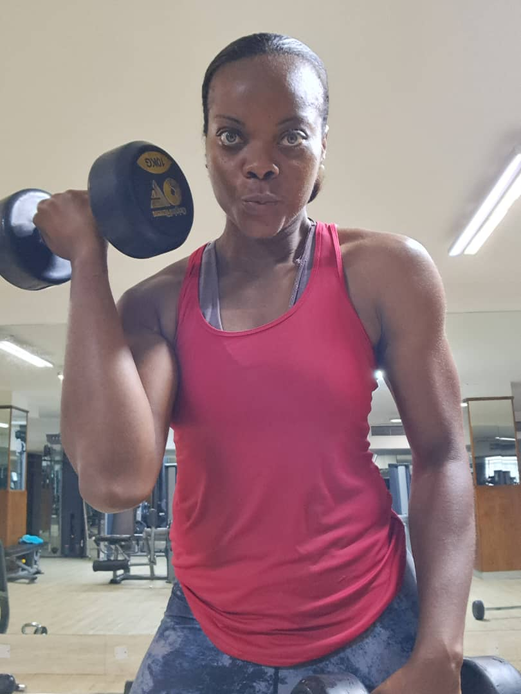
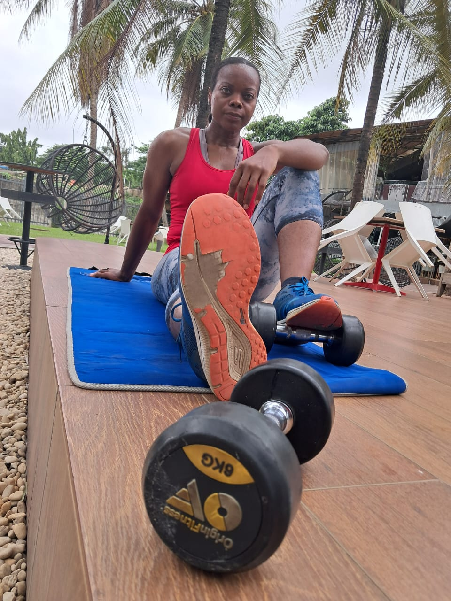
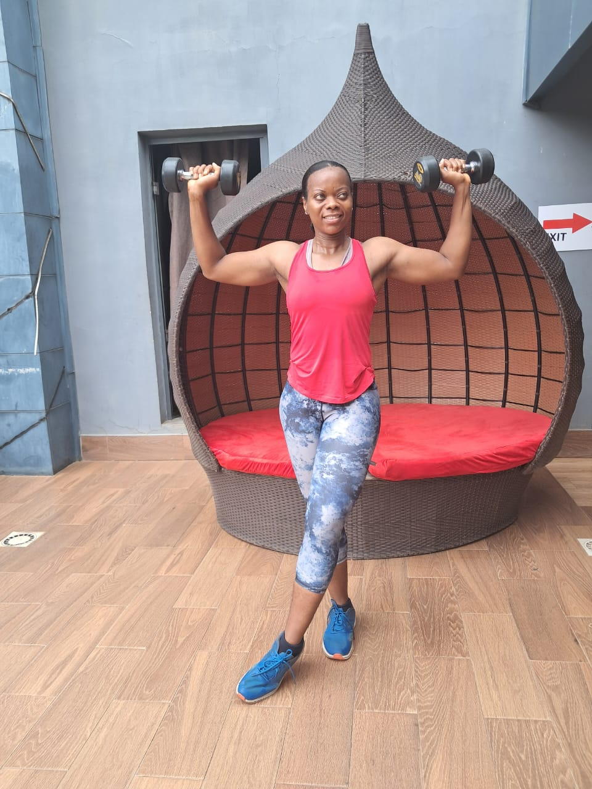
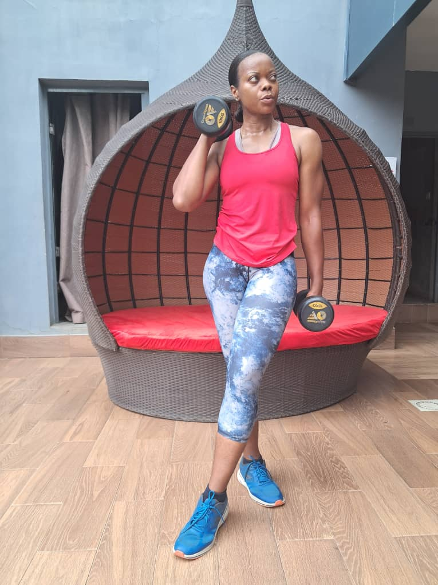
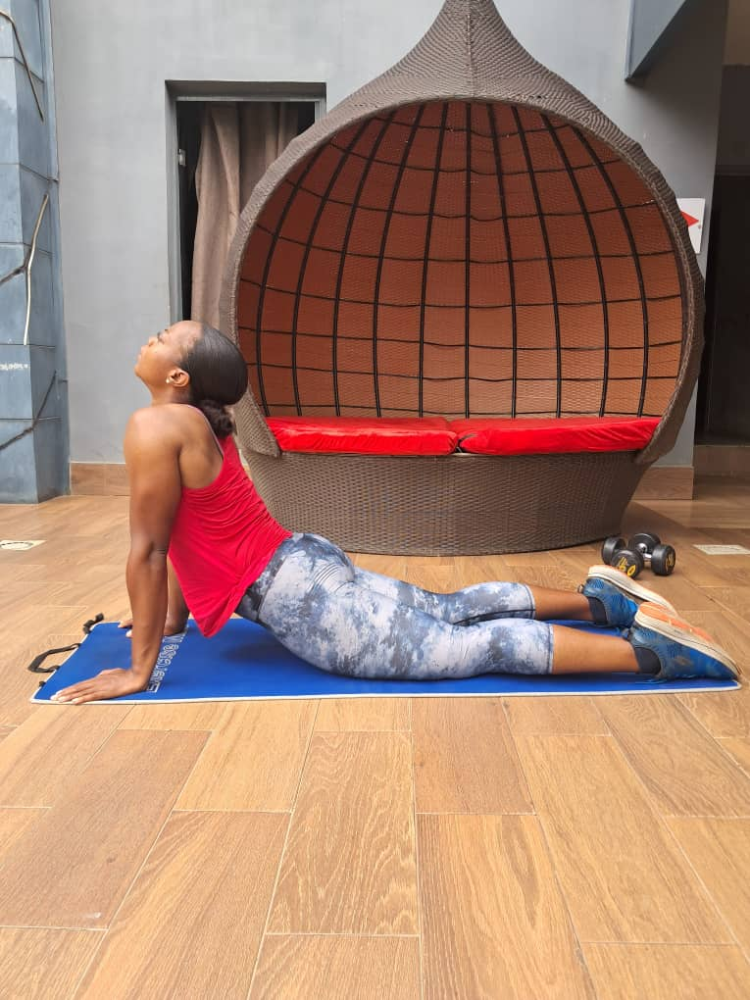
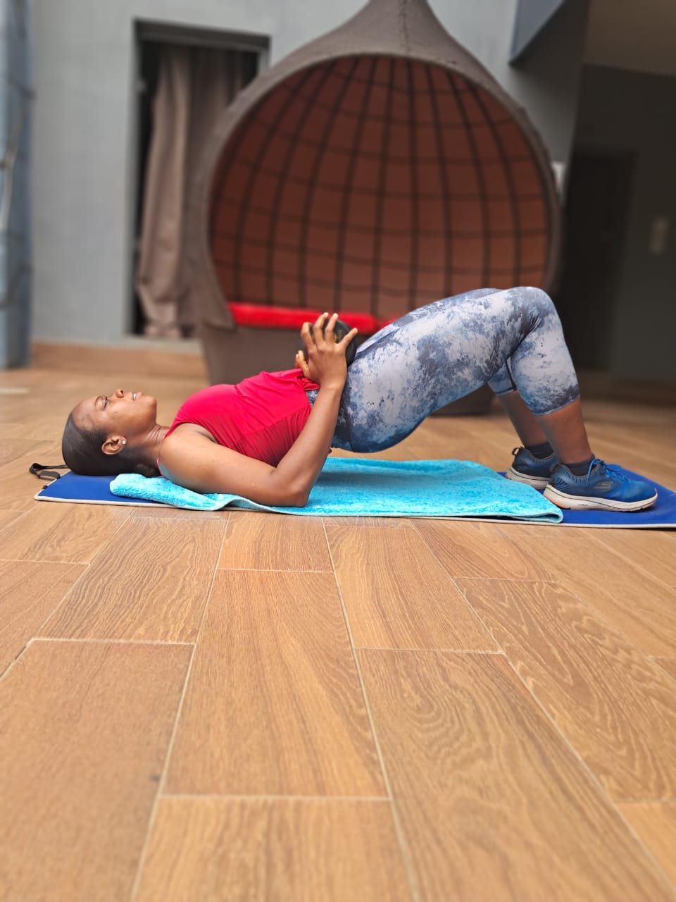
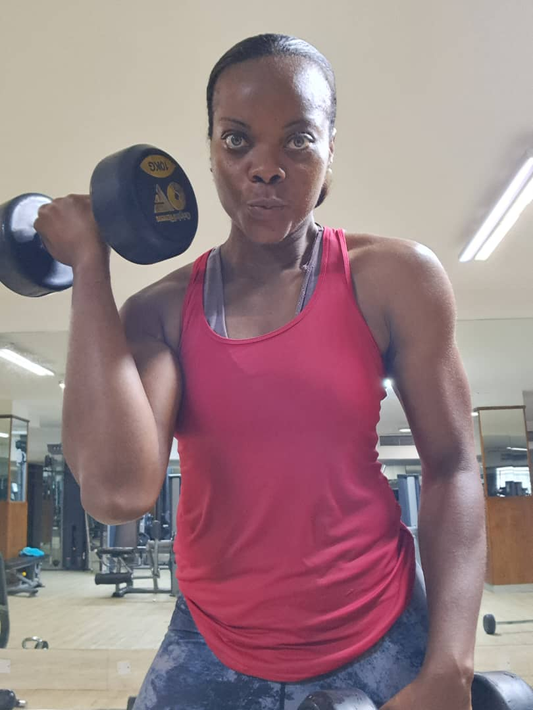
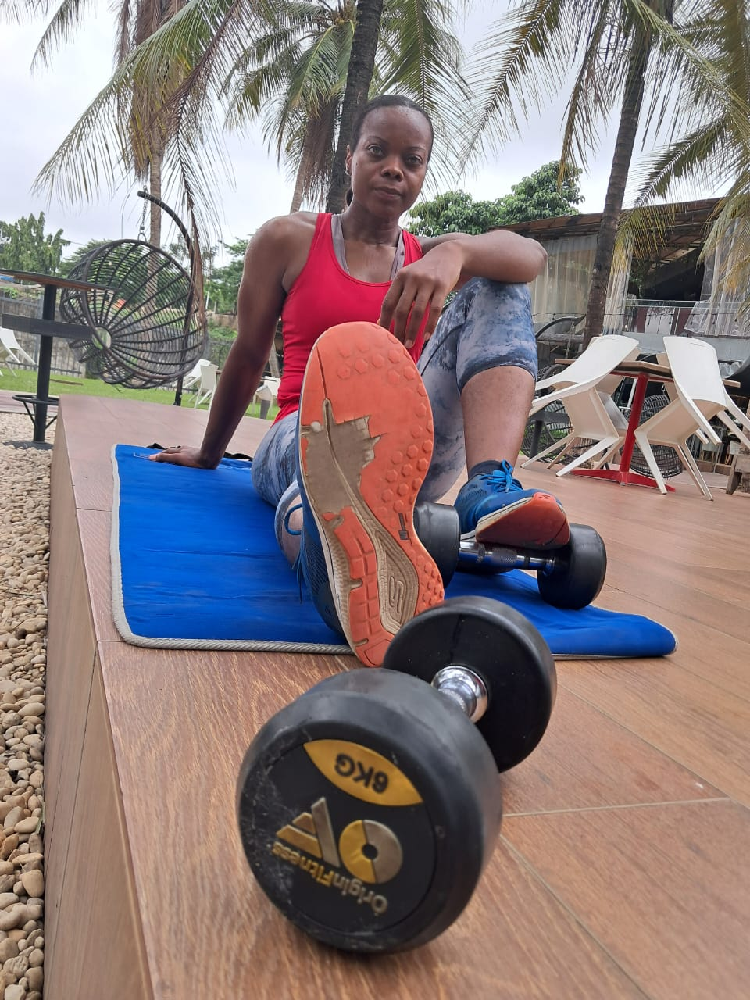
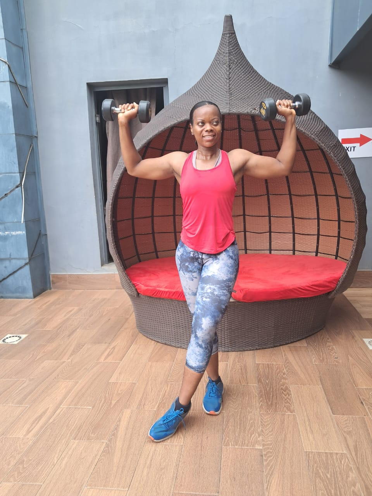
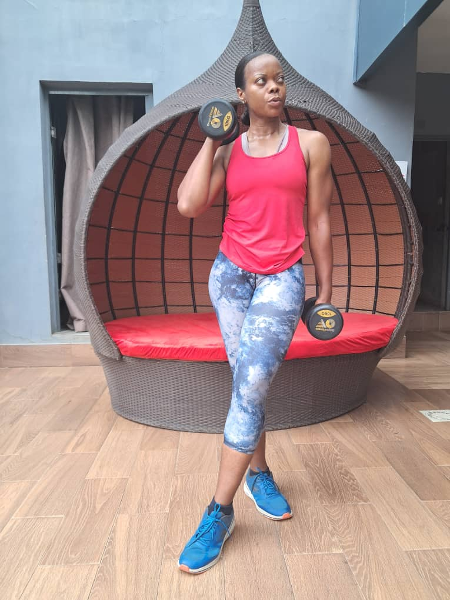
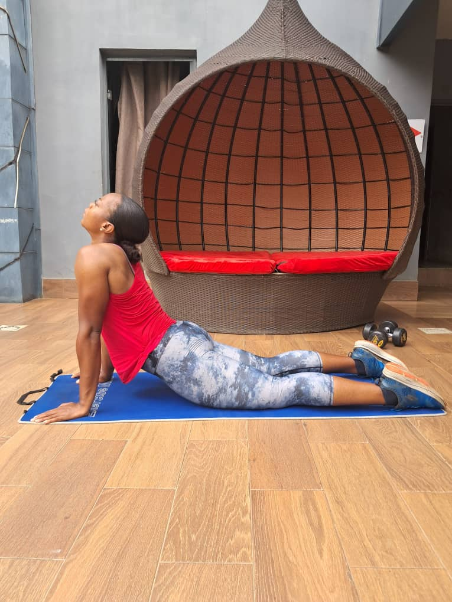
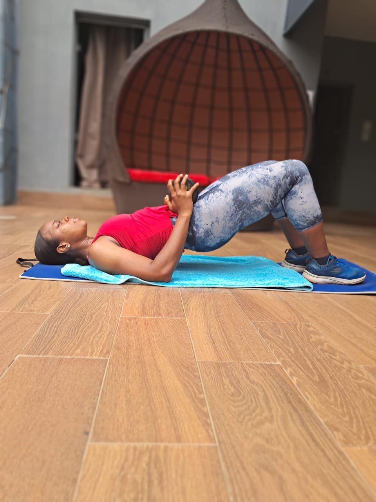

My coaching is mainly for women who want to stay strong, healthy, confident and purposeful in their daily lives. Whether you’re just starting out or looking to maintain your progress, I’ll walk the journey with you
We are passionate about women exuding strength
We’ve come a long way, learn about journey and impact we’ve had with women, over the years
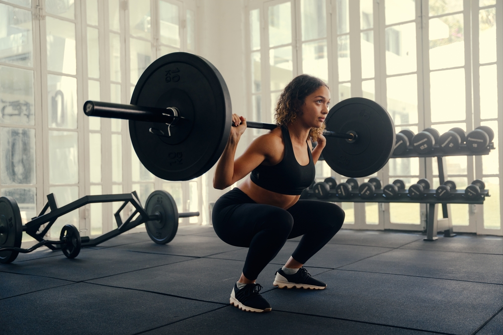